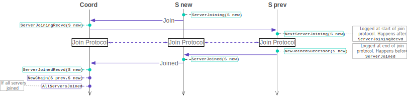

|
In this assignment you will work in a team of three people
to build a key-value storage system (KVS). Your system will
store the association between "keys" and "values" and
support a simple Get(k) and Put(k,v) API. The assignment
specification below explains how your system should
behave. However, the implementation of the system is up to
you. The spec leaves many choices undefined and you will
need to figure out how to realize the specified behavior on
your own.
Assignment overview
Your system will have three types of nodes: a number of
clients, a number of servers, and a
single coord node. The clients will use a local Go
library called kvslib to access the system (similar to the
fcheck library in A2). We will specify the API for this
library, but you will have to implement this library on your
own. The kvslib will not store KV state, instead this state
will be stored by the servers in your system. These storage
servers will be arranged in a logical chain (see diagram
above). This chain structure, coupled with specific get/put
and failure semantics that we detail below will provide the
system with strong data consistency guarantees. Your system
will need to provide service to multiple concurrent clients
simultaneously. The coord node will coordinate the servers
and help clients find the server at the front of the chain
and at the tail of the chain.
Your system will support two types of operations on
keys/values: Put and Get. A put is a mutable operation that
must update all the available servers before the client
receives a success confirmation. A get is an immutable
operation that can only read state from the last server in
the chain. The servers can maintain KV state in memory and
do not need to store KV state durably on disk.
Put operations. Put operations in your system must be
issued by clients (via kvslib) and flow from the head of the
chain of servers to the tail. The server at the tail of the
chain will then acknowledge the put to the kvslib instance
that issued the put. As the put moves down the chain from
server to server, each server updates its local KV state
based on the put command.
Get operations. Get operations in your system must be
issued by clients (via kvslib) to the server at the tail of
the chain. This tail server is responsible for handling and
responding to all get requests and it must respond to get
requests without interacting with the other servers in the
chain.
Server failures. Your system must be able to deal
with servers that fail in a fail-stop manner. You will
assume that network failures do not occur and that clients
and the coord node do not fail. A KVS with N servers will
experience at most N-1 server failures.
A note about diagrams. This spec contains a number of
diagrams. These are not intended to be precise protocol
diagrams and describe the expected data flow your system
should implement. Except for the use of fcheck (see below)
the spec does not require you to use a particular
protocol. For example, the choice of RPC/TCP/UDP is up to
you, and the specifics of the protocol design are also up to
you. The spec does, however, place constraints on which node
communicates with which node and the type of information
they may exchange.
1.1 kvslib API
In this assignment you will develop the kvslib library that
a client will use to access your KVS. Unlike A2, clients
will indirectly interact with each other via the KVS and the
KVS will allow a client to issue multiple concurrent
operations. The KVS associates arbitrary string keys with
arbitrary string values.
The kvslib Start, Get, and Put API calls below must
each create a new distributed trace instance using
Tracer.CreateTrace(). This instance is created per
invocation. In the case of Get and Put calls it will be used
to trace the specific put/get request. Also note that each
call below (Start, Get, Put) will always be invoked one
at a time by the client (i.e., new call will be invoked once
a previous call has returned). For example, the client will
not call Get and Put concurrently. In the descriptions
below, if err (of built-in error type) is nil then the call
succeeded, otherwise err must include a descriptive message
of the error. There are no constraints on what the error
message is, the exact text does not matter. The kvslib has a
KVS struct that must provide the following API (stub methods
are given in kvslib/kvslib.go).
- *KVS ← NewKVS()
- Construct and return an instance of KVS
- notify-channel, err
← Start(localTracer *tracing.Tracer, clientId string, coordIPPort string, localCoordIPPort string, localHeadServerIPPort string, localTailServerIPPort string, chCapacity int)
-
Starts the instance of KVS to use for connecting
to the system with the given coord's IP:port (coordIPPort). The
returned notify-channel channel must have
capacity chCapacity and must be used by kvslib to
deliver all get/put output notifications. chCapacity
determines the concurrency factor at the client: the client
will never have more than chCapacity number of
operations outstanding (pending concurrently) at any one time.
If there is an issue with connecting to the coord, this should return an
appropriate err value, otherwise err should
be set to nil. Note that the KVS library is always an active endpoint
(opening connections to coord and head/tail servers).
localCoordIPPort is the local IP:port
that this client node should use to connect
to the coord node.localHeadServerIPPort is the local
IP:port that this client node should use to connect to
the head server(s).localTailServerIPPort is the local
IP:port that this client node should use to connect to
the tail server(s).
- opId, err ← Get(tracer *tracing.Tracer,
clientId string, key string)
-
This is a non-blocking request from the client to make
a get call for a given key. In case there is an underlying
issue (for example, servers/coord cannot be reached), this
should return an appropriate err value,
otherwise err should be set to nil. Note that this
call is non-blocking. The returned value must be delivered
asynchronously to the client via the notify-channel
channel returned in the Start call. The
value opId is used to identify this request and
associate the returned value with this request.
- opId, err ← Put(tracer *tracing.Tracer,
clientId string, key string, value string)
-
This is a non-blocking request from the client to update
the value associated with a key. In case there is an underlying
issue (for example, the servers/coord cannot be reached), this should
return an appropriate err value, otherwise err
should be set to nil. Note that this call is non-blocking. The
value opId is used to identify this request and
associate the returned value with this request. The returned
value must be delivered asynchronously via
the notify-channel channel returned in the Start
call.
- nil ← Stop()
-
Stops the KVS instance from communicating with the
KVS and from delivering any results via
the notify-channel. This call always succeeds.
The OpId values must have the following properties:
-
Values of
opId must monotonically increase at each
kvslib and be locally unique. They should be comparable at a
single client to determine client-local operation request
order. Globally, across kvslib instances, values
of opId do not need to be comparable.
-
The
opId type is uint32. You can assume that a
client will not issue more than 2^32 operations during the
execution of your system (you do not need to implement id
rollover).
Items returned via the notify-channel should have the
following type:
type ResultStruct struct {
opId uint32
gId uint64
result string
}
Values of ResultStruct must conform to the following:
-
opId must correspond to some previously issued
operation that synchronously returned this opId.
-
If
opId corresponds to a Get(k)
operation, then result should contain the value
associated with key k. A get on a key that has not
been previously put should set result
to an empty string"".
-
If
opId corresponds to a Put(k,v)
operation, then result should be set
to v.
-
gId is the global ordering id used for this
operation by the KVS (see below).
Note that the API above assumes that Get and Put operations
always eventually succeed. This is because the coord node
never fails and at least one server will always be
available.
1.2 Consistency semantics
Your system must provide strong consistency semantics. Your
design can achieve this by (1) totally ordering put requests
at the head server, (2) maintaining that ordering at each
server in the chain, and (3) ordering put requests with get
requests into a single total order at the tail server.
Further below you will notice GetOrdered(gid)
and PutOrdered(gid) tracing actions for traces
that are associated with get and put requests,
respectively. The gid parameter is a global
unique identifier that represents the total ordering noted
in the paragraph above. The total ordering of put and get
operations should make your replicated KV system appear as
if it was single server.
Your system must provide the above data consistency
semantics under all circumstances: regardless of the number
of servers, number of clients, server failures, server failure
pattern, etc.
2.1 Client-coord interaction
The coord node provides a consistent view of the server
chain. It acts as a source of truth about the state of the
chain. The kvslib is provided with the coord node
address. Before the call to Start, kvslib does
not know about any servers in the system. To learn about the
servers in the system the client must coordinate with the
coord node. The diagram above captures the basic
coordination between the kvslib and the coord
node. A couple of points of note:
-
As in A2, you will use distributed traces
extensively. The distributed tracing library API is
unchanged. This spec assumes tracing. That is, we
require that all of your protocols carry and return
tracing tokens, just as was described in A2.
-
The coord node does not, and should not, implement
any key-value state caching. Furthermore, it
should not be on the data path: the clients' Put/Get
operations are not routed through the coord node, but
are sent directly to the head/tail servers in the chain.
-
Clients should only know about the current head/tail of
the chain of servers. They should not know about the other
servers in the chain.
-
Likewise, the kvslib does not, and should not,
implement any key-value state caching.
3.1 Server-coord interaction
The coord node provides a consistent view of the server
chain. It acts as a source of truth about the state of the
chain. In interaction with servers, the coord node allows
joining servers to link up into a chain, detects when
servers fails, and removes failed servers from the chain.
The coord is a simplification of how you would build this
system in practice: the coord's role would be distributed
among the servers in the system. By centralizing the view of
the system in one node we resolve the distributed consensus
problem that we would need to solve in order for the servers
to arrive at the same view of the system.
3.2 Server join process
The server join process (shown above) takes place at the
start. That is, all servers must join the system before any
client operations may be issued to any server. Clients may
start simultaneously as the servers, but their operations
must be queued/blocked while the servers are joining. The
coord node will start knowing to expect exactly N servers
(coord will have N as a parameter). This N is fixed for the
lifetime of the system. Once N servers join and are
configured in a chain, the coord node can allow clients to
learn about the head of the chain to issue their operations.
Each server will have a serverId which denote the order in
which the servers should be arranged in the chain: server
with serverId 1 should be first (head), while server with
serverId N should be last (tail). Note, however, that
servers may not necessarily start and connect to coord in
serverId order. Multiple servers may attempt to join
simultaneously. The coord can serialize these concurrent
joins in the order of serverId.
The figure illustrates a single new server S new joining the
system of two servers S1 → S2. The timelines of the
nodes shows how that node's view of the system changed as a
result of the join. For example, S2's view was S1 → S2;
eventually, its view became S2 → S new. A couple of
points about the join process:
-
Newly joining servers must be added at the end of the
chain.
-
Servers only know about the previous server and next
server in the chain and never about the entire
chain. For example, above, the view of the chain for
S1 does not change. If another server were to join after
S new, then S2's view of the system would similarly not
change.
-
The coord does not update its view of the system until
the servers impacted by the join have acknowledged the new
view of the chain.
-
Servers may join at the same time. The easiest way to
handle is to have the coord serialize these joins and
carry out the above join process one at a time for each
joining server.
3.3 Server failure detection and chain reconfiguration
Servers may fail at any time once client operations have
started to flow through the chain (you can assume that
servers will not fail before all of them have joined the
system, see AllServersJoined action
below). Servers may fail concurrently. However, at least one
server will always be available. That is, for a system of N
servers, the system may experience at most N-1 server
failures. Once a server fails it does not re-join the
system: failed servers remain failed for all time.
Servers should not detect each other's failures. Instead,
they should use the coord node as a centralized failure
detector. The coord node should monitor the servers using a
variant of the fcheck library that you have developed in
A2. The small difference is that the coord node's fcheck
must be able to monitor all the servers simultaneously (not
just a single server as in A2). Note that the failure
detection process shown above omits the fcheck messages
(heartbeats/acks).
Once the coord node detects a failure it should immediately
reconfigure the chain to minimize unavailability period for
the clients. The reconfiguration process shown above is one
way to structure this process: notify each server impacted
by the failure about their updated predecessor/successor
server.
The figure omits important details that you have to figure
out on your own. Specifically, it does not explain how nodes
update their internal key-value states in response to
failure and how these failures impact kvslib instances that
have outstanding put/get operations. Here are a few notes to
help guide your design (see Section 3.1 in the OSDI paper
linked below for more information):
-
If the head server fails then some pending put requests
might be lost (those requests that have not yet made it
to the second server in the chain). The coord node will
detect the head server failure, but since it is not on
the data path it cannot know that put requests were
lost. Neither do the other servers in the chain. It is
therefore the responsibility of kvslib to detect such
lost requests and to resubmit them (remember that put
and get operations must always eventually succeed).
-
If the tail server fails then it should be safe to use
the previous server node as the new tail (i.e., its KV
state is at least as up to date as the tail server that
failed). However, put requests that have not yet been
responded to must be responded to from the new
tail. This may require coordination between kvslib and
the coord node (for kvslib to learn about the identity
of the new tail) and kvslib and the new tail. Note that
get operations will become unavailable during tail
failures. These get requests (that were sent to the
failed tail server) must be resubmitted to the new tail
server.
-
If a server in the middle of the chain fails, then the
servers that are adjacent to the failed server should
(1) learn about one another via the coord node (see
diagram above), and (2) exchange relevant KV state. For
example, given a chain S1 → S2 → S3, the
failure of S2 may lose put operations that have been
forwarded from S1 to S2 but have not yet made it to S3
when S2 failed. These put operations must be resent by
S1 to S3.
-
Failures must not violate the consistency semantics of
the system described above.
-
Tail and head server failures will be visible to kvslib
(which must adjust to use the new head/tail
servers). However, except for performance degradation of
the put data path, kvslib should not be impacted by
failures of servers in the middle of the chain.
-
Server failures should never be visible to the client of
kvslib. From the client's point of view, the KVS system
is always available (a view that is maintained by the
kvslib and the coord node).
4.1 Non-kvslib API specifications
The kvslib API was described earlier. The coord and server
nodes you will implement also have APIs that you must
follow. These are simple APIs that initialize and start the
coord/server processes. We will use these to start your
coord/server instances.
- Coord APIs
*Coord ← NewCoord()
- Construct and return a coord node instance
err ← Start(
clientAPIListenAddr string,
serverAPIListenAddr string,
lost-msgs-thresh uint8,
numServers uint8,
ctrace *tracing.Tracer
)
-
When successful, this call should not return. The coord
node should run until the program is terminated. This
call should return an error if there are networking issues
(e.g., incorrect ip:port given) or other unrecoverable
issues.
clientAPIListenAddr is the IP:port where the coord
will expect clients to connect to it.serverAPIListenAddr is the IP:port
where the coord will expect servers to connect to
it. Note that the coord node cannot connect to
server nodes without having them connect first.- The
lost-msgs-thresh specifies the
number of consecutive and un-acked heartbeats
messages that the underlying fcheck library should
send before triggering a failure.
numServers is the number of servers
that coord should expect to join. This is the N
parameter described above. Each joining server is
expected to have a unique serverId that
is between 1 and N, inclusive.ctrace is a coord tracer
instance; use this to (1) create a new
distributed trace instance using
Tracer.CreateTrace(), and (2) record local coord
actions in the created trace that are not associated
with any particular client request (see below).
- Server APIs
*Server ← NewServer()
- Construct and return a server node instance.
-
err ← Start(
serverId uint8,
coordAddr string,
serverAddr string,
serverServerAddr string,
serverListenAddr string,
clientListenAddr string,
strace *tracing.Tracer
)
- When successful, this call should not return. The server
node should run until the program is terminated. This
call should return an error if there are networking issues
(e.g., incorrect ip:port given), or other unrecoverable issues.
serverId is the identity of this
server. It is a unique number that is between 1 and
N, the total number of servers in the system.coordAddr is the IP:port of the coord node that this
server node should connect to.serverAddr is the local IP:port that this server
node should use to connect to the coord node.serverServerAddr is the local IP:port that this server
node should use to connect to previous server node in the chain.serverListenAddr is the local IP:port
that this server node should use to receive
connections from other (i.e., chain adjacent)
servers.clientListenAddr is the local IP:port
that this server node should use to receive
connections from clients.strace is a server tracer instance; use this
(1) create a new distributed trace instance
using Tracer.CreateTrace(), and (2) record local server
actions in the created trace that are not associated with
any particular client request (see below).
Tracing Semantics
As in A2, all actions that you record in this assignment
will be part of distributed tracing. Keep in mind that all
ordering constraints are evaluated according to the happens
before relation (i.e., using vector clocks), not physical
clock timestamps. Below we use the generic term trace
to refer to a trace that was created by some node with the
understanding that the trace type is clear. The colors in
the legend below help to disambiguate. There are traces
generated to trace a put or a get operation. But, there are
also traces for other components. We sometimes refer to
kvslib traces as ktrace, coord traces as ctrace, and server
traces as strace when discussing actions recorded as part of
the kvslib/coord/server traces. These are distinct from the
put/get traces (though they are part of the same logical
timespace). The diagrams below illustrates the actions that
you should record with circles on the timeline. These
diagrams, as the diagrams above, illustrate the simple cases
with no concurrent clients/failures and describe the traces
separately (even though, in practice, tracing will occur
concurrently at the different components). The horizontal
solid arrows in the diagrams below indicates
the happens-before relation.
There will be five types of traces in your system (five
colors in the legend). The most basic tracing actions are
those associated with the API calls to start the kvslib
library and coord/server nodes. The coord and server
processes are expected to run forever, so they do not have a
corresponding Stop call.
The kvslib requests to learn about the current head and tail
of the chain should be traced as above. Note that there is
an action recorded before the request/reply is sent and an
action recorded when the request/reply is received. This
pattern is followed in the diagrams below, as well.
Get requests generated by the client (to the kvslib)
generate their own traces: the kvslib services the get
request with a single round-trip exchange with the current
tail server. Note the gid (global id) parameter
at the tail server: this is a unique identifier that
globally and totally orders this get request relative to all
other get and put requests. The GetOrdered(gid)
action captures the get ordering. In case of tail server
failures, this trace may span multiple servers (all but one
of which have failed). Regardless of server failures,
Get and
GetResultRecvd actions should only be recorded
one time for a single get request.
A put request also generates its own trace. Unlike a get,
this traces extends across the entire chain of
servers. Because puts always succeed (as do gets), this
put-forwading style of tracing must be preserved even if
servers fail. Like a get, a put also receives
a unique gid. Unlike a get, this gid is generated at
the head server (PutOrdered(gid) at S1 in the diagram).

Servers join by contacting the coord node. This generates
the ServerJoining
and ServerJoiningRecvd trace actions. Since
servers join at the tail, the predecessor server must be
involved in the join protocol. It records
a NextServerJoining before the join protocol
and a NewJoinedSuccessor after the join
protocol. The ServerJoined and
ServerJoinedRecvd events book-end the join
protocol. After the join protocol completes, the coord node
records a NewChain to indicate that the chain
has reconfigured and optionally
the AllServersJoined action if all servers have
joined the system.
Server failures generate a variety of events. The scope of
these events is limited to the coord node that detected the
failure and the one or two servers that happen to be
adjacent to the failed server (if a head or tail servers
fail, then only one server will be
impacted). ServerFail starts things off; this
action is logged when the failure is detected. It is logged
only once per failure. ServerFailRecvd is
generated by servers adjacent to the failed server and
indicates that they learned about the failure. After this
point the failure protocol (that you design) runs. This
protocol terminates at each impacted server with either a
NewFailoverSuccessor or
a NewFailoverPredecessor. The failure protocol
termination is signalled to the coord node with a
corresponding action
ServerFailHandled recorded before the signal.
The coord must record a NewChain action (as in
the join case). This action indicates that the coord and the
chain of servers have resolved the failure and the chain has
successfully reconfigured.
Actions to be recorded by kvslib (as part of ktrace, put trace, get trace):
KvslibStart{clientId}: Recorded in
ktrace. Signifies the start of a client's kvslib. For
each unique ClientId corresponding to a running
client, the tracing log as a whole should contain
this action exactly once, as part of ktrace. This action should happen-before all other
actions recorded by the client with ClientId.
KvslibStop{clientId}: Recorded in
ktrace. For a specific clientId, kvslib records
this action to mark the end of a client session,
corresponding to the completion
of KVS.Stop(). For each ClientId
corresponding to a running client, the tracing log as
a whole should contain this action exactly once, as
part of ktrace. This action should happen-after all
other actions reported by a given clientId.
HeadReq{clientId}: Recorded
in ktrace. Indicates that the kvslib from client with
id clientId about to send a request to the coordinator
for the head server.HeadResRecvd{clientId, serverId}:
Recorded in ktrace. Indicates that the kvslib at client with
id clientId has received a response to its head server request,
and the head server id is serverId.TailReq{clientId}: Recorded
in ktrace. Indicates that the kvslib from client with
id clientId about to send a request to the coordinator
for the tail server.TailResRecvd{clientId, serverId}:
Recorded in ktrace. Indicates that the kvslib at client with
id clientId has received a response to its tail server request,
and the tail server id is serverId.
Put{clientId, opId, key, value}:
Recorded in a put trace. For a
given ClientId, Key and Value, kvslib
should record this action just before sending a Put
operation to the server at the head of the chain (head
server).
- A trace must contain this action, or a Get action,
exactly once before either of the corresponding
KvslibPutResult and KvslibStop.
- This action must happen-before all corresponding
PutRecvd/PutOrdered/PutFwd/PutFwdRecvd/PutResult instances
recorded by the servers.
PutResultRecvd{opId, gId, key}: Recorded in
a put trace. kvslib should record this action just after
receiving the Put results from tail of the chain.
- If a Put action is recorded, a trace must contain
this action exactly once after KvslibStart and after
the Put action.
- A trace must contain this action after
PutRecvd/PutOrdered/PutFwd/PutFwdRecvd/PutResult instances
recorded at servers that are available when this
action is recorded.
Get{clientId, opId, key}: Recorded
in a get trace. For a given ClientId
and Key, kvslib should record this action just
before sending a Get operation to the server at the tail
of the chain.
- A trace must contain this action, or a Put action,
exactly once before either of the corresponding
GetResultRecvd and KvslibStop.
- This action must happen-before corresponding
GetRecvd/GetOrdered/GetResult instances recorded by
servers that process this get.
GetResultRecvd{opId, gId, key, value}:
Recorded in a get trace. kvslib should record this
action just after receiving the Get results from tail of
the chain. Here value is the value of the
key key.
- If Get action is present, a trace must contain
this action exactly once after KvslibStart and the
Get action.
- This action must happen-after corresponding
GetRecvd/GetOrdered/GetResult instances recorded by
servers that processed this get.
For each client, OpIds are unique: Any two traces
from the same client that contain opIds, must have distinct
opId values.
Actions to be recorded by coord (as part of ctrace, ktrace, and strace):
CoordStart{}: Recorded in ctrace. Signifies
the start of the coordinator node. For a single
execution of your system, this action should appear just
once as there is a single non-failing coordinator node.
ServerFail{serverId}: Recorded in
ctrace. Indicates that the coord detected failure of
server with id serverId.
ServerFailHandledRecvd{failedServerId, adjacentServerId}:
Recorded in ctrace. Indicates that a server with
id adjacentServerId adjacent to a failed
server failedServerId has completed the failure
protocol.NewChain{chain}: Recorded in
ctrace. Indicates that the system has finished
reconfiguring into a new chain of servers chain,
where chain is a totally ordered list of server
ids.
AllServersJoined{}: Recorded in
ctrace. Indicates that (1) the expected number of
servers have joined the system, and (2) the KVS is ready
to process client operations.
HeadReqRecvd{clientId}: Recorded
in ktrace. Indicates that the coordinator received a
request for the head server from client with
id clientId.HeadRes{clientId, serverId}:
Recorded in ktrace. Indicates that the coord will respond
to head request from clientId with serverId.TailReqRecvd{clientId}: Recorded
in ktrace. Indicates that the coordinator received a
request for the tail server from client with
id clientId.TailRes{clientId, serverId}:
Recorded in ktrace. Indicates that the coord will
respond to head request from clientId
with serverId.
ServerJoiningRecvd{serverId}:
Recorded in strace. Indicates that the coord has received
a join request from a server with id serverId.ServerJoinedRecvd{serverId}:
Recorded in strace. Indicates the coord's knowledge
about the fact that the server with id serverId
has successfully joined the system.
Actions to be recorded by server (as part of ctrace, strace, put trace, get trace):
ServerStart{serverId}: Recorded in strace.
Signifies the start of a server node. Each server will
record this action just once for a single execution of
your system since servers start once and when they fail
they do not rejoin an existing system.ServerJoining{serverId}: Recorded
in strace of the joining server. Indicates that the
server with id serverId is about to join the
system.
NextServerJoining{nextServerId}:
Recorded in strace. Indicates that the server with
id nextServerId is joining the system and that this
server will be in the chain after the server that
records this action.NewJoinedSuccessor{nextServerId}:
Recorded in strace. Indicates that the server with
id nextServerId has completed joining the system and
that this joined server will be in the chain after the
server that records this action.ServerJoined{serverId}: Recorded
in strace of the joining server. Indicates that the server
with id serverId has joined the system.
ServerFailRecvd{failedServerId}:
Recorded in ctrace. Indicates that the server recording
this action has just learned that the server with id
failedServerId has failed.NewFailoverSuccessor{newNextServerId}:
Recorded in ctrace. Indicates that the server recording
this action has completed the failure protocol and will
now use newNextServerId as its successor in the
chain.
NewFailoverPredecessor{newPrevServerId}:
Recorded in ctrace. Indicates that the server recording
this action has completed the failure protocol and will
now use newPrevServerId as its predecessor in the
chain.ServerFailHandled{failedServerId}:
Recorded in ctrace. Recorded by a server just before it
communicates to the coord to notify the coord that this
server has successfully completely the failure protocol
to reconfigure the chain to omit the server with
id failedServerId.
PutRecvd{clientId, opId, key, value}:
Recorded in put trace. Recorded by a
server that is the head of the chain (at the time of
recording this action) and indicates that it has received
a put operation from the client.
PutOrdered{clientId, opId, gId, key,
value}: Recorded in put trace. Recorded by a
server that is the head of the chain (at the time of
recording this action) and indicates that it has ordered
the received put operation from the client with global
id gId.PutFwd{clientId, opId, gId, key,
value}: Recorded in put trace. Recorded by a
server just before it forwards the corresponding put
operation down the chain to the next server.PutFwdRecvd{clientId, opId, gId, key,
value}: Recorded in put trace. Recorded
by a server when it has received the corresponding
put operation from a predecessor server in the
chain.PutResult{clientId, opId, gId, key,
value}: Recorded in put trace. Recorded by the
(tail) server that replies with a confirmation to kvslib
about the corresponding put operation.
GetRecvd{clientId, opId, key}:
Recorded in get trace. Indicates that the (tail) server has
received the corresponding get operation from kvslib.GetOrdered{clientId, opId, gId,
key}: Recorded in get trace. Indicates that the
(tail) server has ordered the corresponding get operation
with global id gId.GetResult{clientId, opId, gId, key,
value}: Recorded in get trace. Recorded by the
(tail) server that replies to the kvslib with result of
executing the corresponding get operation
Assumptions you can make
- KV server failure can be detected reliably from the
coord node using the fcheck strategy described in
A2.
- The coord node does not fail
- Client nodes do not fail
- A single client will not issue more than 2^32
operations during the execution of your system.
- There will be at most 16 servers in the system (i.e.,
N is at most 16).
- There will be at most 256 clients in the system.
- There will be at most N-1 server failures.
- Servers will not fail before coord has logged the
event
AllServersJoined.
- Your system will not experience a network
partition.
- ChCapacity will be no larger than 1024
Assumptions you cannot make
- The network is reliable.
- Round-trip time between nodes is predictable or bounded.
- Servers do not fail
Design questions to resolve
This assignment allows for substantial design
flexibility. Here are a few design questions you will have
to answer as part of working on A3:
-
You will notice that unlike A2 we do not include
parameters for addresses from which your fcheck library
should send/receive heartbeats and acks. In A3 we consider
fcheck as an internal implementation detail. You can
assume that for coord's fcheck you can use the same IP as
in the argument
serverAPIListenAddr to
coord's Start. And, you can assume that for server's
fcheck you can use the same IP as in the
argument serverAddr to server's Start. For
fchecks' UDP ports you will need to pick random ports to
get a free port (do not hardcode these!). Because fcheck
requires knowing the UDP port of the remote end-point, you
will need to exchange the selected random ports over
another connection (e.g., over RPC).
- Should client detect server failures or be notified
about server failures by the coord. You can use fcheck
at the clients, but be careful with using two distinct
failure detectors: always trust the fcheck at the coord
and use/think of the client fcheck as an
optimization. Same design question pertains to servers:
should servers detect server failures? The
considerations are similar.
-
The fcheck library that you will use for failure
detection must rely on UDP. But, the other protocols you
will design can use higher-level protocols. We recommend
using RPC for all the protocol you design: it provides
reliability and Go's built-in RPC library is easy to
use. But, you can use another protocol if you wish.
-
A concern with tail server failures is the impact on
clients who have issued get requests that have been
lost. Clients have to participate in recovery (since
other, non tail, servers do not know about get
requests), but the exact protocol is up to you to
design.
-
A concern with head server failures is the impact on
clients who have issued put requests that have been lost
with the head server. As with tail server failures,
clients may have to participate in recovery. Unlike tail
server failures, some put requests may be known to other
servers in the chain. Your design should likely
distinguish these two types of put requests. Be
especially careful with ordering of put requests during
failures. A good protocol would not re-order put
requests that has been ordered (and whose ordering is
known to non-failed servers).
-
In response to both head and tail server failures a kvslib
may have to time out a previous operation attempt and
retry. When should a kvslib time out? This depends on
how the client learns about head/tail server
failure. Though, remember, that the new head/tail server
information must come from the coord and it must be
properly traced before the client connects to these new
head/tail servers.
-
Unlike a get request, a put request may flow through
multiple servers. How should the put success be
delivered to the client? There are two basic options:
either the put operation contains enough information for
the tail server to contact the client that generated the
put operation. Or, the client should reach out the tail
to check about the put operation (i.e., poll the tail).
Implementation requirements
- Your code should connect to and use an external
tracing server using the information in the APIs
(kvslib, server, coord).
- Your code must be runnable on CS ugrad machines and be
compatible with Go version 1.16.7 (which is
installed on ugrad machines)
- You must use the A2 UDP message types for fcheck to
detect server failures from the coord.
- You cannot change the APIs above and you must use the
tracing actions defined in the code.
- Your solution can only
use standard library Go
packages.
- Your solution code must be Gofmt-ed
using gofmt.
Trace-based correctness properties
Initialization
-
KvslibStart must exist and must happen before any:
-
KvslibStop
-
HeadReq
-
TailReq
-
Put
-
Get
-
CoordStart must be recorded exactly once and must happen before any:
-
ServerJoiningRecvd
-
AllServersJoined
- Exactly N
ServerStart instances must exist
-
ServerStart(S) must happen before ServerJoining(S)
Termination
-
KvslibStop(C) cannot be followed by any actions recorded by C
Join handling
- The number of
ServerJoining(S) instances in the trace must be equal to 1
-
ServerJoining(S) must be eventually followed by:
- Exactly one
ServerJoiningRecvd(S)
- At most one
NextServerJoining(S) recorded at S', where S' ≠ S
- At most one
NewJoinedSuccessor(S) recorded at S', where S' ≠ S
- Exactly one
ServerJoined(S)
- Exactly one
ServerJoinedRecvd(S)
-
NewChain(C) such that the list C contains the server id S.
-
ServerJoining must be eventually followed by AllServersJoined
-
AllServersJoined must exist and must happen before any
Failure handling
-
ServerFail(S) must be followed by either one or two ServerFailRecvd(S)
-
ServerFailRecvd(S) must be followed by either
- At most one
NewFailoverSuccessor(X), where X ≠ S, or
- At most one
NewFailoverPredecessor(X), where X ≠ S
-
ServerFailRecvd(S) must be followed by
- At most one
ServerFailHandled(S)
-
ServerFailHandledRecvd(S) must be preceded by ServerFailHandled(S)
-
ServerFail(S) must be eventually followed by NewChain(C) such that the list C does not contain the server id S.
Join/Failure handling:
-
NewChain must be preceded by either ServerFail or ServerJoined
Head server requests
- The number of
HeadReq(C) and HeadReqRecvd(C) instances in the trace must be identical
-
HeadReq(C) must happen before HeadReqRecvd(C)
- The number of
HeadRes(C,S) and HeadResRecvd(C,S) instances in the trace must be identical
-
HeadRes(C,S) must happen before HeadResRecvd(C,S)
Tail server requests
- The number of
TailReq(C) and TailReqRecvd(C) instances in the trace must be identical
-
TailReq(C) must happen before TailReqRecvd(C)
- The number of
TailRes(C,S) and TailResRecvd(C,S) instances in the trace must be identical
-
TailRes(C,S) must happen before TailResRecvd(C,S)
Put handling
Put recorded by client C must be preceded by HeadResRecvd(C,S) and the corresponding put operation from C must have been issued to server S. Put recorded by client C in trace P must be eventually followed by the following actions, all recorded in trace P
- Exactly one
PutResultRecvd(gid) at C, which determines the final gid of your Put operation
- Exactly one
PutOrdered(gid1) with gid=gid1 at some server S, which determinis the server S that eventually issues the Put
- At least one
PutRecvd recorded at S
- Zero or more
PutFwd(gid2) at S, where gid=gid2
- If there are
PutFwd(gid2) at S and gid=gid2, then there are at least one PutFwdRecvd(gid3) at S', where S' ≠ S and gid=gid3
- At least one
PutResult(gid4) at S', where S' may or may not be equal to S and gid=gid4
- The order of the above rules indicates how trace checker performs the check. In addition, the actions above need to satisfy the happens-before relation:
Put -> PutRecvd -> PutOrdered(gid) -> [PutFwd(gid) -> PutFwdRecvd(gid) ...]* -> PutResult(gid) -> PutResultRecvd(gid)- The
gid above refers to the final gid of a Put operation
Get handling
Get recorded by client C must be preceded by TailResRecvd(C,S) and the corresponding get operation from C must have been issued to server S. Get recorded by client C in trace G must be eventually followed by the following actions, all recorded in trace G
- Exactly one
GetResultRecvd(gid) at C, which determines the final gid of your Get operation
- Exactly one
GetOrdered(gid1) with gid=gid1 at some server S, which determines the server S that eventually issues the Get
- At least one
GetRecvd recorded at server S
- At least one
GetResult(gid2) at S, where gid=gid2
- The order of the above rules indicates how trace checker performs the check. In addition, the actions above need to satisfy the happens-before relation:
Get -> GetRecvd -> GetOrdered(gid) -> GetResult(gid) -> GetResultRecvd(gid)- The
gid above refers to the final gid of a Get operation
Put-Get Data Consistency
- Given any:
-
Put(_, _, key, value1) and a corresponding PutResultRecvd(_, gId1, key), and
-
GetResultRecvd(_, gId3, key, value3)
- Such that, if:
-
gId1
< gId3
- And, ∄
PutResultRecvd(_, gId2, key) such that gId1
< gId2
< gId3
- Then
Get before any Put Data Consistency
- Given any
-
GetResultRecvd(_, gId2, key, value1)
- If
-
∄
PutResultRecvd(_, gId1, key) such that gId1
< gId2
- Then
OpID consistent with gID
- Let
cId be a client id
- Let Req = {
op | [ op = Put(clientId, _, _, _)
∨
op = Get(clientId', _,_)] ⋀ clientId = clientId' = cId }
- Let Res = {
op | [ op = PutResultRecvd(clientId, _,_)
∨
op = GetResultRecvd(clientId', _, _ ,_)] ⋀ clientId = clientId' = cId }
- Let
op1Req
∈ Req have opID opId1
- Let
op2Req
∈ Req, op2Req
≠
op1Req, have opID opId2,
- Let
op1Res
∈ Res be in the same trace as op1Req and have gID gId1
- Let
op2Res
∈ Res be in the same trace as op2Req and have gID gId2
- Then,
-
gId1 < gId2
⇔
opId1 < opId2, and
-
gId1 > gId2
⇔
opId1 > opId2
Starter code
We provide code for tracing actions and the APIs listed
above: kvslib, server, and coord. The starter code also
includes a sample client that uses the kvslib API and a
program to start the server and another program to start the
coord.
Starter code can be found
here.
Rough grading scheme
- Your code must compile and work on ugrad servers
- Your code must not change the APIs defined above
- You must not change the name and path of your config files
- Your code must be configurable using the config files
- The command make client must be able to compile your client code
- The executable of your client must be generated at bin/client after compilation
- Similarly for coord and server compilation:
make coord and make server.
If any of these are violated, your mark for this
assignment is 0. This is true regardless of how many characters had to
be changed to make your solution compile, and regardless of how well
your solution works with a different API or on a different
machine.
Your system must satisfy the above data consistency and
tracing semantics. We will evaluate your system under
different scenarios. Each scenario will include several
concurrent clients and concurrent put/get operations. Below,
work correctly means that the output traces of your
system (ktraces, ctrace, straces, put traces, get traces)
satisfy the data consistency and tracing semantics above.
The high-level A3 mark breakdown across the scenarios looks
like this:
- 10% : Puts/Gets work correctly with a single server
- 10% : Puts/Gets work correctly with multiple servers that do not fail
- 20% : Gets continue to work correctly when tail server(s) fail
- 20% : Puts continue to work correctly when head server(s) fail
- 40% : System works correctly when up to N-1 servers fail
Further reading
Chain replication originated in an OSDI 2004 conference
paper. Since then it has made its way into a number of
products
like MongoDB. The
following set of links are recommended reading to further
develop your understanding of the ideas behind this
proposal. You should note that the assignment spec has
nuanced tracing semantics that you won't find in external
readings. And you'll find that the spec has a simpler design
than what most readings assume: the assignment design
offloads failure detection and chain reconfiguration to a
centralized coord node.
- Start with the
original OSDI
paper by Renesse and Schneider. This is not an easy
read, but you should at least skim it.
- Murat's blog
post explains the paper at the high level and refers
to some follow on work. It's an easy ready with most
complexity squeezed into one or two paragraphs.
- There are many random blog posts about chained
replication. Some are fairly detailed,
like this
one. And here
is one that is perhaps too high level. If you find a
good resource, let me know and I can include it here.
Advice
-
Use your team effectively. This assignment is hard to
do on your own. You have to be smart about who works
on what and how you integrate your work
together. There are three components: kvslib, coord,
server. Splitting these up between each of the three
people on your team is one way to slice up the work.
- Compile and run your code on the ugrad servers.
- If you write code that uses goroutines, then consider
using locks to
serialize access to data structures that might need to be modified
and accessed by more than one goroutine
- Use gob
encode/decode for sending structs across the network.
- The time package is
helpful for measuring elapsed time between heartbeats and
ACKs.
- You might find
the SetReadDeadline
method useful.
-
Note that due to NATs and Firewalls you may be unable to
reach your KV servers running on ugrad servers from
outside of the UBC network. Either test by running all
code on ugrad nodes or by using the UBC VPN.
Make sure to follow the
course collaboration policy and refer
to the submission instructions
that detail how to submit your solution.
|